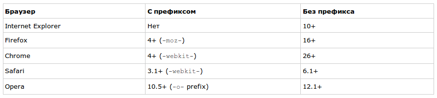
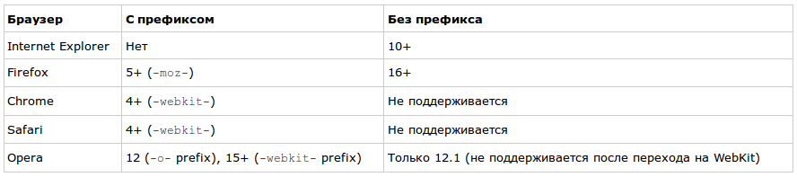

Анимацию в браузере можно реализовать с помощью:
- gif
- js: меняем изображения, управляем стилями dom элементов
- flash
- svg
- css
Способы создания анимации с помощью CSS
transition-timing-function:
- transition-property
- transition-duration
- transition-delay
- transition-timing-function
- steps()
Поддержка CSS transitions

Поддержка временных функций CSS

keyframes
@keyframes <name> {
0% {
property: value;
}
n% {
property: value;
}
}
http://codepen.io/stephengreig/pen/LmohC
Animation
animation: moveFromBottom 300ms ease-in-out;
Transform
transform: translateY(200%);
Сравнение различных реализаций
нагрузка, Профилирование
Способы ускорения для сложных анимаций